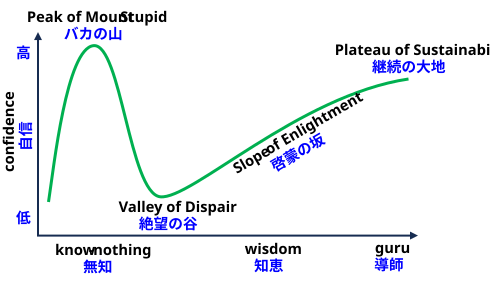

能力の低い人が、自分の能力を過大評価してしまう認知バイアスの一種。

研究のきっかけは、1995年にアメリカで起きた「顔にレモン汁を塗って銀行強盗をした男」の事件だった。その男は「レモン汁は透明インクの代わりになるから、顔に塗れば防犯カメラに映らない」という誤った知識を信じ込み、逮捕された際に「But I wore the juice! (でもレモン汁を塗ったのに！)」と驚いたという。 これを知ったダニング教授は、「能力のない人は、自分の能力のなさを認識する能力さえないのではないか」という仮説を立てた･･･
「･･･どちらの強盗もマスクを着用したり変装を試みたりはせず、代わりに顔にレモン汁を塗っていた。ウィーラーによると、ジョンソンはレモン汁は透明インクのように防犯カメラに映らないようにすると言っていたという。最初は懐疑的だったウィーラーは、顔にレモン汁を塗ってポラロイドカメラで撮影し、この方法を試した。結果の写真に自分の姿が写っていなかったため、この方法が効果的だと確信した･･･」刑事たちは、写真にウィーラーが写っていないのは、フィルムの不良、カメラの調整不良、またはウィーラーが意図せずカメラを顔から遠ざけたことのいずれかが原因だと考えた。
強盗事件の簡単な記述は、1996年版の『ワールド・アルマナック』に掲載された。コーネル大学の社会心理学教授であるデイビッド・ダニングは、この話を発見し、その後、ピッツバーグ・ポスト・ガゼット紙に掲載された事件に関するより詳しい記事を読んだ。彼は、「ウィーラーが銀行強盗になるには愚かすぎたのなら、おそらく彼は自分が銀行強盗になるには愚かすぎるということを知るにも愚かすぎたのだろう。つまり、彼の愚かさが、彼自身の愚かさを自覚することから彼を守っていたのだ」と考えるようになった。彼は大学院生のジャスティン・クルーガーと共に、人の認識されている能力が実際の能力と比較して測定できるかどうかを判断するための研究プログラムを組織した。彼らは1999年の論文「無能でそれに気づかない：自分の無能さを認識することの難しさが自己評価の過大評価につながる仕組み」を執筆し、その中で「人々が成功と満足を得るために採用する戦略において無能である場合、二重の負担を負うことになる。誤った結論に達し、不幸な選択をするだけでなく、無能さゆえにそれを認識する能力も奪われる。その代わりに、ウィーラー氏のように、自分はうまくやっているという誤った印象を抱くことになる」ことを発見した。これはダニング＝クルーガー効果として知られるようになった。